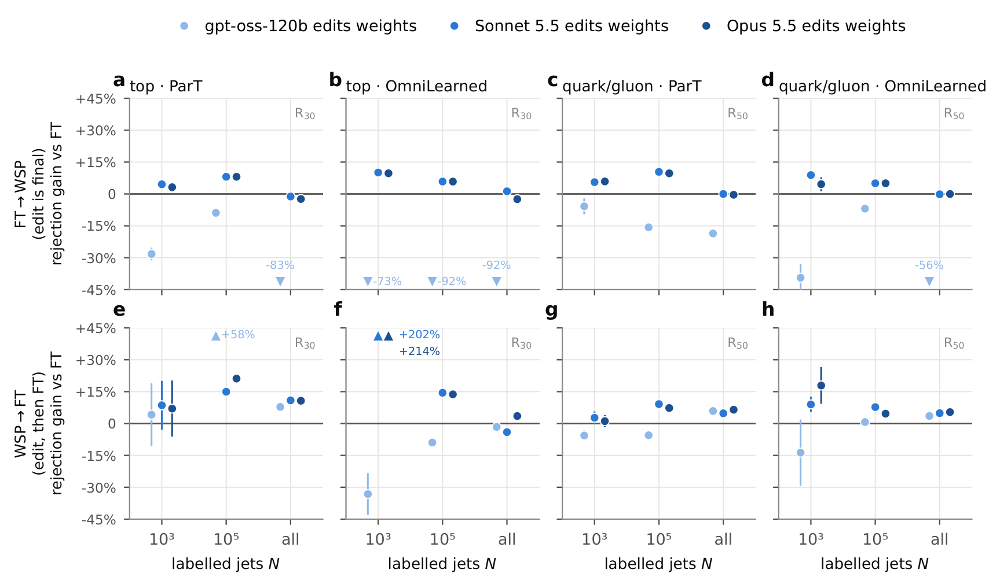
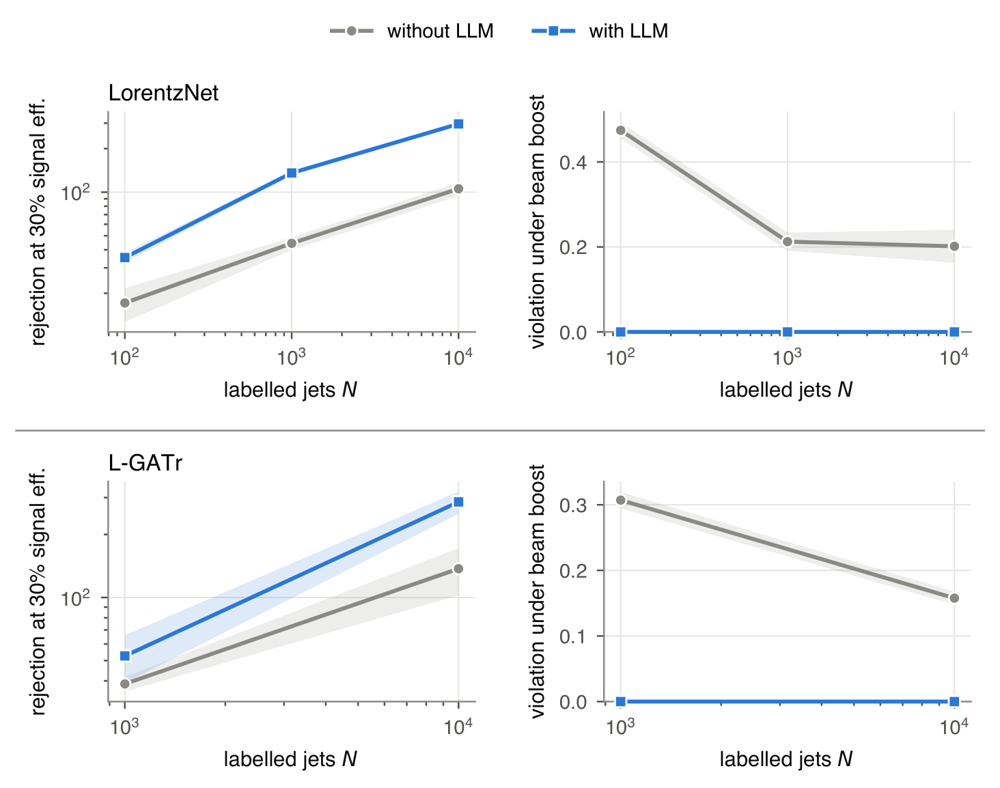
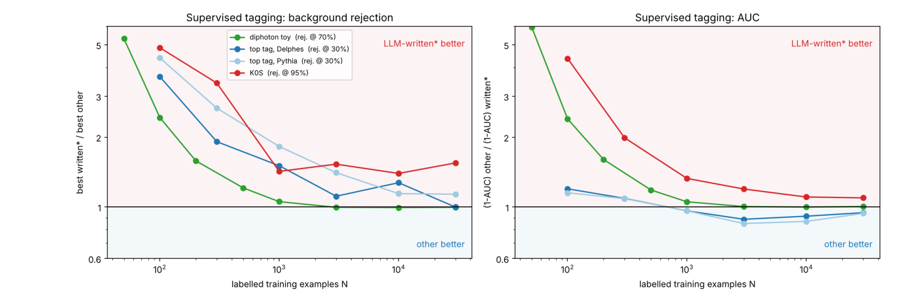

Weight-Space Programming with Large Language Models for High Energy and Nuclear Physics
Abstract
The neural networks used in high energy and nuclear physics are trained almost entirely by gradient descent, and physics knowledge reaches their weights only indirectly, through features, architectures or labels. Weight-space programming (WSP), in which a large language model (LLM) writes and edits network weights directly, has recently emerged as an alternative to training. In this work, we introduce physics-shaped WSP, in which the LLM works on weights that have an explicit physical meaning. The LLM can edit these weights without gradient steps, encode physics knowledge into them as an inductive bias, and extract governing laws from them after training.
For top tagging with limited labeled data, a direct edit of pretrained taggers with no gradient step surpasses fine-tuning on the same data, by up to an order of magnitude in background rejection. We further show that the LLM can recover physical laws from trained weights. Writing a recovered symmetry law back into jet taggers that lack it restores the symmetry and raises their background rejection up to threefold. The same operations carry over to a cut-based particle selection and to jet reconstruction in heavy-ion collisions. These results establish weight space as a practical interface between physics knowledge and learned models.

Results
Editing pretrained jet taggers
With no gradient step and a thousand labeled jets, the LLM rebuilds the output layer of ParT from its pretrained class rows. It rejects 13 times more background than fine-tuning on the same jets.

Encoding the pair interaction
Pair interactions written by an LLM from physics alone improve a transformer trained on a thousand jets about as much as ParT's own learned pair interaction.

Laws recovered from trained weights
From the weights alone, the LLM states the law a small network has learned, including unphysical laws that cannot be recalled from textbooks.


The recovered law in jet taggers
The LLM writes the recovered Minkowski metric back into LorentzNet and L-GATr. Their rejection rises 1.4 to 3 times, and their output no longer changes under a common boost of jet and beams.

Further applications
For a K0S selection, LLM-encoded cuts act as a prior worth several times the labeled data, and direct edits match black-box optimizers with far fewer evaluations. For heavy-ion jets, an edit improves the momentum resolution without a fragmentation bias.


Code and data
Prompts, every LLM interaction of the automated runs and the code behind each figure are in the repository.
Citation
@article{Jiang:2026wsphep,
author = {Jiang, Cheng and Qian, Sitian and Fu, Dawei and
Lu, Yiping and P{\l}osko{\'n}, Mateusz},
title = {Weight-Space Programming with Large Language Models
for High Energy and Nuclear Physics},
year = {2026},
note = {arXiv number to follow}
}